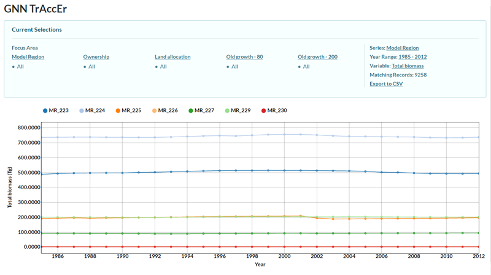
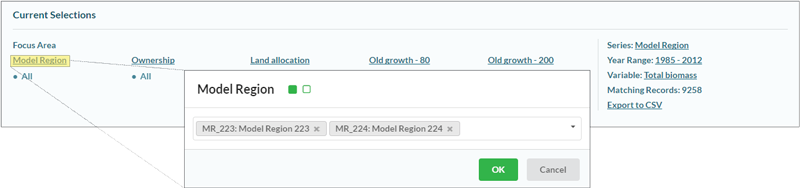
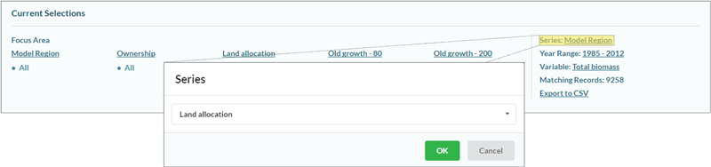
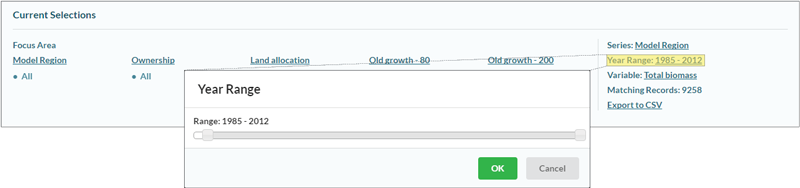
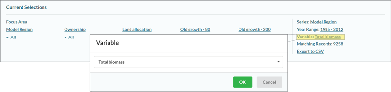
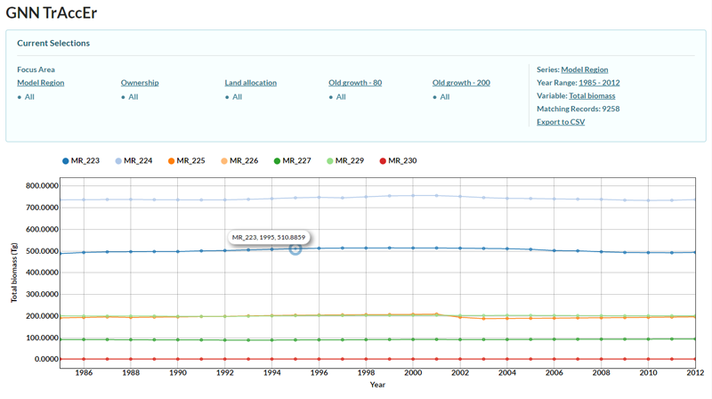
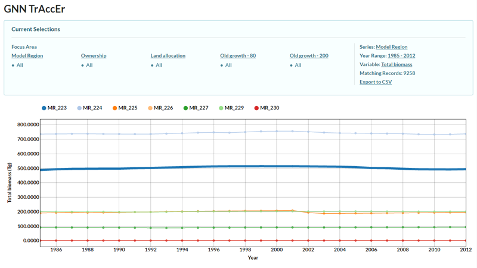
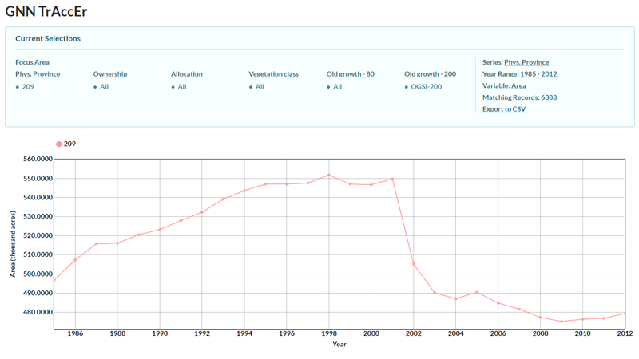
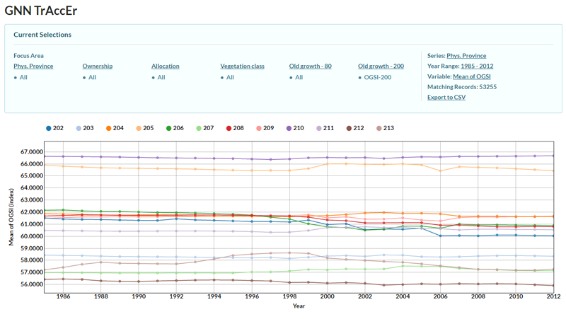

The gradient nearest neighbor (GNN) imputation mapping approach has been used to develop wall-to-wall, 30-m resolution vegetation maps for forests in western North America, focusing primarily on California, Oregon, and Washington. However, GNN users must have substantial analytical expertise and computational resources to effectively leverage these data. This may be a significant barrier for many interested parties. For example, the most recently available GNN structure maps are roughly 1 GB in size. The recent development of annual maps stretching back to the early days of Landsat 5 (1985 to 2012) means that every pixel (900 m2) has 28 annual estimates of each of 333 structure variables associated with it. As a result, users are faced by [28 years] × [333 variables] × [1.8×109 pixels] = 1.7×1013 predictions they might summarize across space and time. This quantity of data can be truly daunting. To simplify users’ introduction to the GNN data and facilitate data exploration, we have developed the GNN Trend and Accounting Explorer (GNN TrAccEr), a web-based platform for visualizing and exporting landscape- and regional-scale data summaries.
While the purpose of the GNN TrAccEr is to simplify the user’s introduction to GNN data, there are significant challenges to using and interpreting the summarized results presented by the tool. Below, we provide several links to additional information about the GNN TrAccEr and the GNN method itself.
The GNN TrAccEr can be thought of as two different components: 1) a background analysis script and 2) a web-based visualization tool. For the background analysis component, we combine rasters that represent strata (e.g. ownership, land-use allocation, etc.) together with the full time series of GNN rasters (1985-2012) so that all unique combinations of strata are calculated for every year. This can be a time-consuming processing task depending on the number of strata and the geographic extent of the rasters (up to 12 hours). Once these are calculated, the yearly files are combined into a single comma-delimited, or CSV, file where every record represents a unique strata combination for a given year and captures the response variable information for the requested GNN variables, including area.
The CSV file is combined with a JavaScript Object Notation (JSON) file (which provides configuration options and metadata) and placed on the web server. The web-based visualization tool reads the JSON configuration file, dynamically builds the user interface, and provides logic for summarizing across unique combinations of strata and providing interactive charting to the user. Note that the web-based visualization is not specific to GNN data – one should be able to adapt this tool for summarizing data from any trend-based model or simulation.
The front-end of the GNN TrAccEr (i.e., web-based visualization) is quite flexible, allowing for a wide degree of customization for individual user groups. Examples will be available soon on an archiving website. Regardless of which configuration of the GNN TrAccEr is used, there are several steps to using the tool and understanding the data presented. As we describe how to use the GNN TrAccEr, we will use an example configuration (below) of the tool designed to explore stand biomass across Oregon through time.
- Tool layout. The GNN TrAccEr is organized into two sections: the upper portion of the window that allows the user to define how to organize the data and the lower portion where the trends are summarized and plotted. In the upper portion, links to the left control how the data are stratified while links on the right control the sub-setting of the data into different series, altering the range of years, changing the variable of interest, and exporting the trend information as a comma-delimited file.
-
Stratifying data. Initially, all data are combined
together to provide the mean of a variable of interest or the area the data cover. To focus
on only certain strata, the user can click on one of the Focus Areas (e.g., Model Region).
A dialog box will appear and, when the empty field is selected, a dropdown of strata appears. Any
number of these can be selected. Finally, the user needs to select “OK” to use only these strata.

There are two types of strata that have different effects on trends in the data: strata defined
based on the GNN data itself and strata defined by other spatial coverages (i.e., non-GNN strata).
In the current example, Model Region, Ownership, and Land allocation
are non-GNN strata and Old growth – 80 and Old growth – 200 are GNN variables.
- GNN strata. Stratification based on GNN strata are useful for examining changes in the area of vegetation features through time as the GNN data vary from year to year as a function of the changes in the satellite imagery. Examination of response variables relates to the average state on that GNN strata through time. However, the strata and response variables may not be independent. In the current example, old-growth forests (i.e., classified as Old growth – 200) tend to have higher biomass than forests without.
- Non-GNN strata. Stratification based on non-GNN strata are useful for examining changes in response variables (e.g., biomass) through time. Currently, non-GNN strata are not allowed to vary through time so that area for each non-GNN strata is constant.
- Combining GNN and non-GNN strata. Using more than one strata (both GNN and non-GNN strata) can be used for both trends in area or response variables, though users should take care when interpreting these combinations and think about how those results relate to the strata being used. For more information, see the Potential Pitfalls section.
- Sub-setting the data into series. For the purposes of plotting, series are represented by each individual line. In other words, the user can plot several strata in the same figure. To the right, the series is defined and can be changed by clicking on the current series definition. Then, the user can select any of the strata, which will present results for each strata within the series separately. For example, for Land allocation, different trends are presented for the mean conditions or area for multi-resource allocations, Private-OFRA allocations, etc. 
- Altering the range of years. Data are available from 1985 to 2012. Users can define any continuous range within that period. 
- Changing the variable of interest. The response variable of interest can be altered, usually including area as well as continuous GNN variables. 
-
Altering chart display features. There are several ways
the user can interact directly with the chart itself.
-
Zoom. While holding the cursor over the figure,
using the mouse wheel will alter the scale for the response variable (i.e., y-axis)

- Point Data. While hovering the cursor over a single point in the time-series, GNN TrAccEr will display the name of the strata represented and the value of the response variable for that year by strata combination. 
- Highlight Strata. While hovering over the name of the strata in the legend above the chart, GNN TrAccEr will highlight the time-series for that strata. 
-
Zoom. While holding the cursor over the figure,
using the mouse wheel will alter the scale for the response variable (i.e., y-axis)
- Exporting the data as a comma delimited file. After selecting "Export to CSV", the user can specify a file name and the CSV file will be saved to the user's download location.
The GNN TrAccEr is flexible and easy to use, but users should take care when interpreting the trends. In particular, several questions should always be in users’ minds:
- Should the vegetation trends of interest be captured over broad geographic areas? Users should think carefully about whether the change they are attempting to examine is large enough to be captured at the level of the strata being used. For example, the impacts of disturbance events on broad-scale temporal trends in forest attributes presented by the GNN TrAccEr depends on the size of strata and the size of the disturbance. The Biscuit Fire (2002) covered over 2000 km2 and altered forest structure across a large portion of southwest Oregon. As a result, substantial trends in forest structure (e.g., forest area with old-growth structure index > 200) are clear and large relative to their initial values (approximately 30% reduction) (see below). 
- Are the vegetation trends dramatic? For most elements of vegetation structure and composition, change is usually slow (e.g., biomass increases as trees grow, species turnover as forest succession progresses, etc.). However, disturbance events, such as wildfire, timber harvesting, insect and disease outbreak, alter forest conditions rapidly over the course of days to years. At broad scales, slow, subtle trends may be difficult to capture and may be hard to differentiate from stable behavior (i.e., no change).
- Are area estimates or continuous attributes most appropriate? The selection of appropriate response variables to plot trends of is a key decision and requires some thought. For non-GNN strata, areas do not change through time as we use a single raster to represent these strata. Because estimates of areas will be static, trends in non-area response variables are appropriate. For GNN strata, the opposite is true because GNN strata change annually with imagery, making area estimates interpretable (e.g., how has area of old-growth changed?), but examination of other response variables difficult. For example, if we plot mean OGSI for old-growth forests in each physiographic province (see below), we are looking at a chart that tells us how OGSI changes in forests with OGSI similar to forests with stand age greater than 200. How does one interpret this chart? Is the old-growthiness of old-growth changing over time? 
-
Is the trend ecologically meaningful? Users need to be
well-aware of what constitutes an ecologically meaningful change in a response variables. For
example, if we create a chart to look at mean canopy cover on USFS lands in Oregon and Washington
(USFS-R6) for the East Cascades of Oregon (Phys. Province 203) we might see dramatic
fluctuations (see below), but once one looks at the scale of the response variable, it becomes
clear that these fluctuations may not be of much importance (range of canopy covers is 2%).
Therefore, users should carefully examine the scale of the response variables before trying to
interpret a perceived pattern.

- Are the attributes of features accurately represented in vegetation maps? Since the inception of GNN, there has been a heavy focus on accuracy assessment to inform users as to the limitations of the data. Those same uncertainties are likely to be translated into results from the GNN TrAccEr. We suggest that users familiarize themselves with our publications, especially Pierce et al. 2009 and Bell et al. 2015. Additionally, accuracy assessment reports are available here as part of the GNN download.